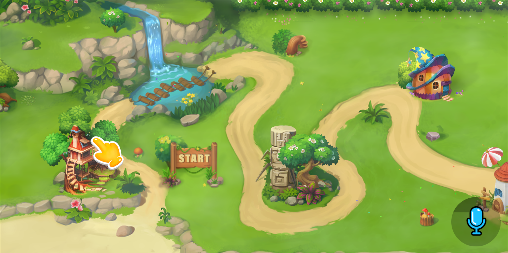
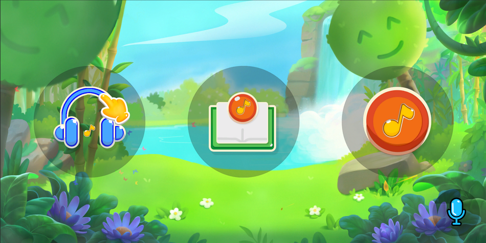
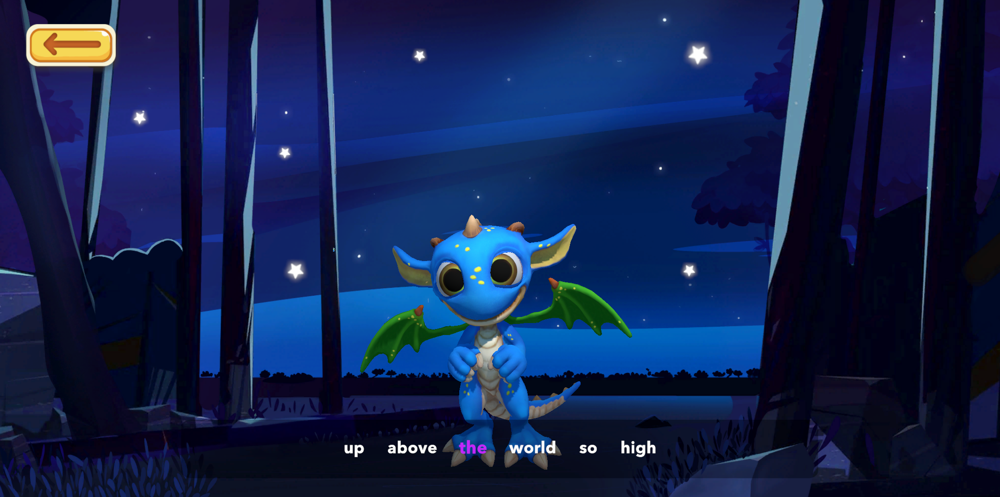
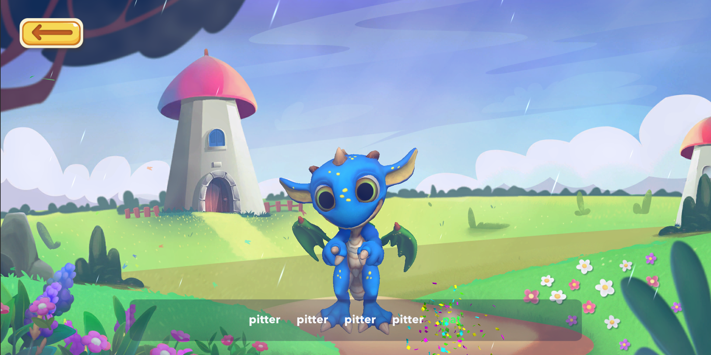
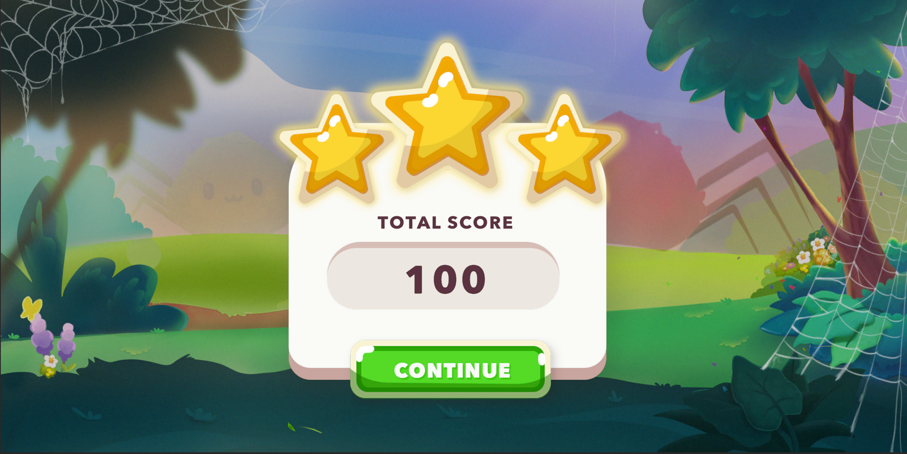

Finnegan
The Dragon
Made the codebase on this project from the ground-up. Got to experience making a project from scratch and having full liberty of making my own architectural decisions, which has helped me learn a lot about different engineering paradigms and practices.





Finnegan The dragon had some unique challenges allowing me to improve my programming skills.
Code Architecture:
Since this was the first time I was responsible for designing and implementing the codebase, I tried to build the app based upon it's context and long term scalability. I implemented most of the codebase following the SOLID principles. I kept the codebase modular and easily extendible. This really paid off as it made the numerous iterations very painless and straightforward as everything was easy to adjust. Some examples include a heirarchical UI structure providing an all in one solution to the different types of UI's in our design while leaving room for extension. I used interfaces to ensure that event listening and subscriptions were easy to manage and debug.
Tools and Utilities
I wanted everything to be easily editible, streamlined, well structured and easy to use. I took this opportunity to create various utility classes, editor scripts and general unit tests, some of which have seen use in other projects within the company. Some examples include, unit tests for scene naming consistency between files and code, debugging utilties, custom scene navigators, custom UI buttons and more. I got hands on experience working with assembly definitions and project structuring too.
Pitch detection algorithm:
Managed to create a custom pitch detection algorithm using my existing knowledge of music theory along with FFT techniques which were needed as this was a karaoke game. I also got hands on experience with compiling dlls using CMake.
Client facing and design:
Was responsible for breaking down client requirements and had a key role in game design. I had to improvise making some interesting visual effects using particle systems and shaders as the artist was time bound. These include tree swaying, waterfalls, rainfall, mist, butterflies and leaves.